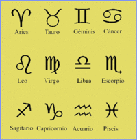
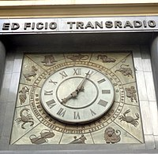

En la astrología occidental, los signos zodiacales o signos astrológicos (de «zodiaco», del griego ζωδιακός [κύκλος] (zoodiakos [kiklos], «rueda de los animales»), son los doce sectores de treinta grados de la eclíptica desde el equinoccio vernal, una de las intersecciones con la elíptica con el ecuador celeste, también conocido como Punto Aries. De acuerdo con esta astrología, los fenómenos celestes reflejan o rigen las actividades humanas, de forma que se sostiene que los doce signos del Zodíaco representan doce personalidades básicas o modelos de expresión característicos. El orden de los doce signos tradicionales son: Aries, Tauro, Géminis,Cáncer,Leo,Virgo,Libra,Escorpio,Sagitario,Capricornio,Acuario yPiscis. El nombre de cada sector fue dado en Babilonia, para luego ser adoptados en la antigua Grecia, según las constelaciones que pasaban en el momento de nombrarlos.
Los signos zodiacales son distintos a las constelaciones zodiacales. De acuerdo al modelo de Ptolomeo, las estrellas de las constelaciones zodicacales están sobre la octava esfera y tienen extensiones diferentes, mientras que los signos zodiacales están en la novena esfera ocupando sectores del mismo tamaño (30º), debido a la precesión de los equinoccios signos y constelaciones zodiacales se van desplazando de forma que las fechas en las que el Sol oculta tras de sí las constelaciones y los signos están desplazados en casi un mes respecto a las que tenían hace 2300 años en las que ambas se hicieron coincidir
Los signos están influenciados por un planeta o astro y estos llevan nombres de la mitología romana antigua, que tienen el mismo equivalente en la mitología griega (ejemplo, Venus: Afrodita; el Sol: Helios). El culto dejó de practicarse tras la prohibición de la inquisición cristiana (s. IV d. C.), y fue retomado varios siglos después a partir del Renacimiento (s. XVI-XVII), o más tarde incluso.
Tanto en la astrología occidental como en la India se enfatiza el espacio y el movimiento del Sol, la Luna y los planetas en el cielo a través de cada uno de los signos zodiacales. En la astrología china, en cambio, el énfasis se encuentra en el tiempo, con el zodiaco operando en ciclos de años, meses y horas del día. Una característica común de las tres tradiciones, no obstante, es la importancia del signo ascendente, es decir, el signo zodiacal que está ascendiendo, según la rotación de la Tierra, en el horizonte oriental en el momento del nacimiento de la persona (esto varía según el lugar , por ejemplo en China y medio oriente)
Signos zodiacales clásicos.
Personificación de los signos zodiacales clásicos en un reloj en el Edificio Transradio Internacional de la ciudad de Buenos Aires, Argentina.